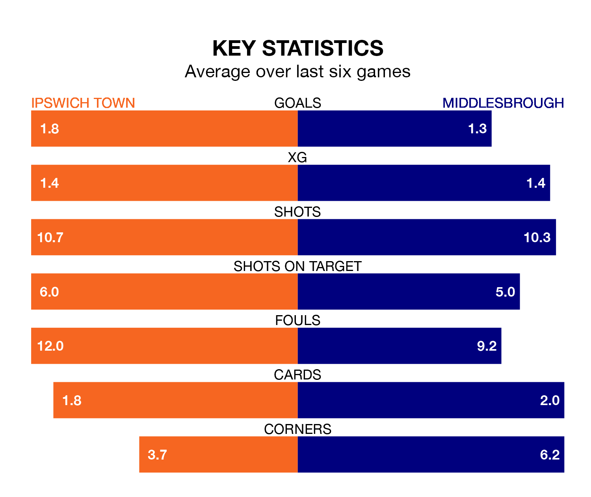

Middlesbrough face Ipswich Town on Saturday seeking to protect their formidable unbeaten run in EFL Championship.
The Boro are unbeaten in eight, with five wins and three draws, ahead of the 3pm kick-off.
They face an Ipswich team who have won five and drawn one over the same number of games.
With 84 goals in 42 games so far this season, Ipswich are the league's highest scorers with 2.0 goals per game. And they are conceding fewer than average, letting in 52 goals at a rate of 1.2 per game.
Middlesbrough are also above average scorers, with 1.4 goals per game, compared to a league average of 1.3. They have conceded 1.3 goals per game.
Town are second in the table after 42 games, of which they have won 26 and drawn 10, earning 88 points.
The Boro are eight places behind the Blues in 10th, with 18 wins and eight draws putting them on 62 points.
In the last 10 years, Ipswich and Middlesbrough have played each other on nine occasions. Ipswich won two of them, Middlesbrough five, and they drew twice.
On average, the Blues scored 0.8 goals and the Boro 1.6 in those matches.
Their last meeting was on December 9, when Ipswich won 2-0 away.
In Václav Hladký, the home team can rely on one of the league's safest pair of hands. He has kept 14 clean sheets in his 42 appearances this season, and only two other 'keepers – Leeds United's Illan Meslier and West Bromwich Albion's Alex Palmer – have been able to prevent the opposition scoring on more occasions in EFL Championship.
In the visitors' net, Timothy Dieng has 10 clean sheets in 31 games. He has conceded a goal every 75 minutes, 10% more often than the 84 minutes between goals for Hladký.
Ipswich's last match was on Wednesday, a 0-0 draw against Watford.
Middlesbrough drew 2-2 with Hull City last time out, also on Wednesday, with Emmanuel Latte Lath and Finn Azaz on the scoresheet.
Saturday's match will be refereed by Samuel Allison, who has taken charge of 15 EFL Championship games so far this season, issuing one red card and booking 55 players. He has awarded one penalty.
The last Ipswich game Allison refereed was a 2-1 home win against Sunderland on January 13. His last Middlesbrough match was their 2-1 loss at home against Bristol City on February 10.
Updated: 10:01 (UTC), 12/04/24